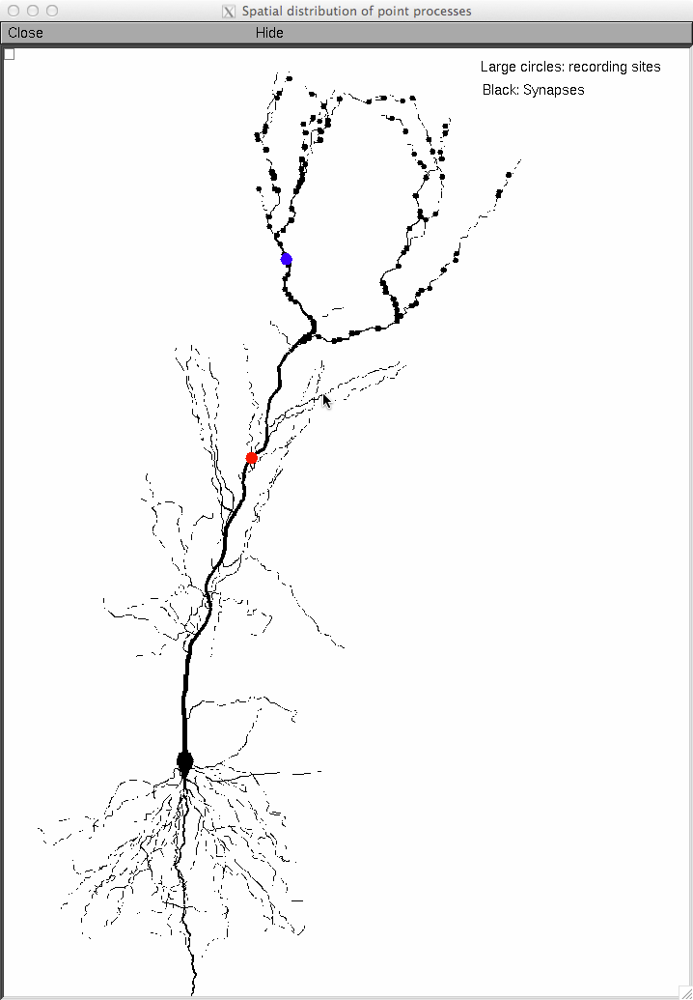
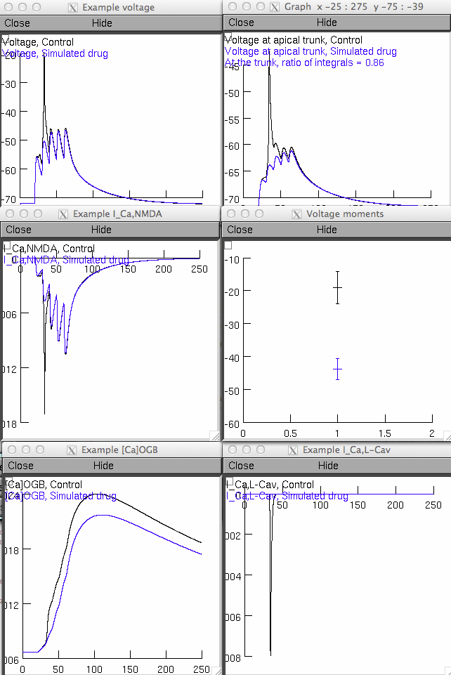

This is the readme for the model associated with the paper:
Kim Y, Hsu CL, Cembrowski MS, Mensh BD, Spruston N (2015) Dendritic
sodium spikes are required for long-term potentiation at distal
synapses on hippocampal pyramidal neurons. Elife
This model was adapted based on previously published models (as
described in the paper). The neuron was reconstructed from a
55-day-old male rat.
This model requires NEURON which is freely available at
http://www.neuron.yale.edu.
Usage:
Auto-launch from modeldb or download and extract the model. Compile
the mod files in fullMorphCaLTP8 subfolder with nrnivmodl (unix/linux)
or mknrndll (mswin or max os x). Use "start.hoc" to start the program
("nrngui start.hoc" on unix/linux, double click start.hoc in windows
explorer (mswin), or drag and drop start.hoc onto the nrngui icon
(mac)).
After the simulation runs for a couple of minutes you should see the
following figures which are similar to those in figure 8 in the paper:


Questions can be directed to Ching-Lung Hsu (hsuc at
janelia.hhmi.org), Mark Cembrowski (cembrowskim at janelia.hhmi.org)
or Nelson Spruston (sprustonn at janelia.hhmi.org).
20150830 New version supplied by Ching-Lung Hsu corrects typos and
simplifies init.hoc to omit caimax.mod, caiPeaks.mod, and vmax.mod
from model.